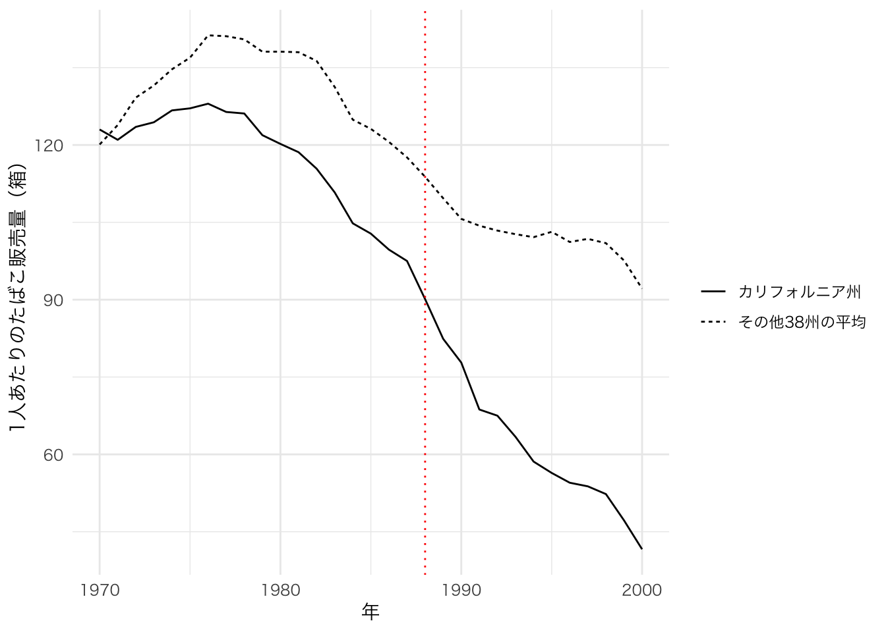
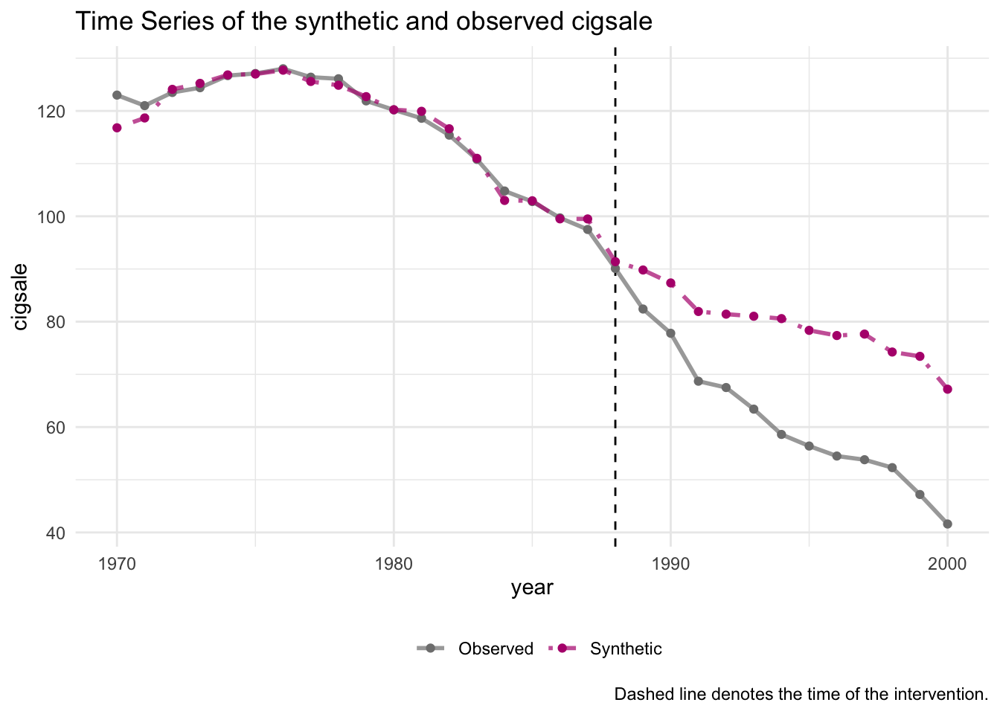
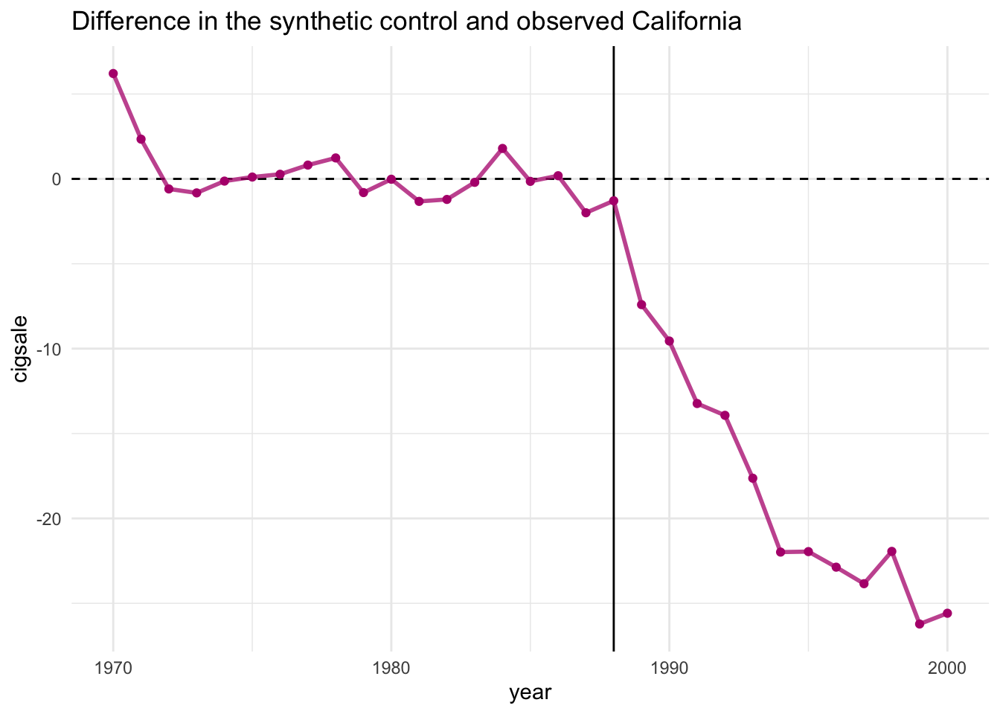
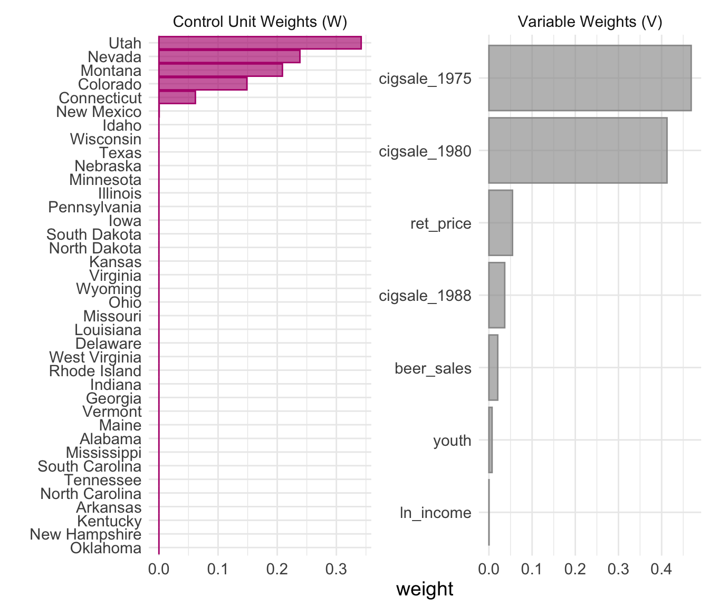
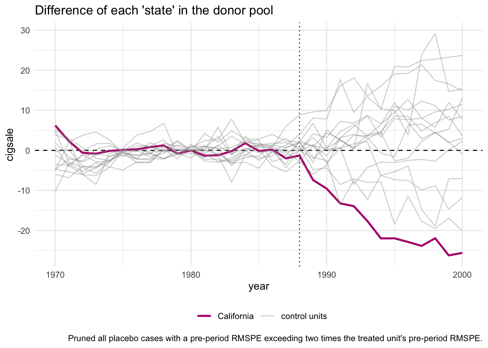
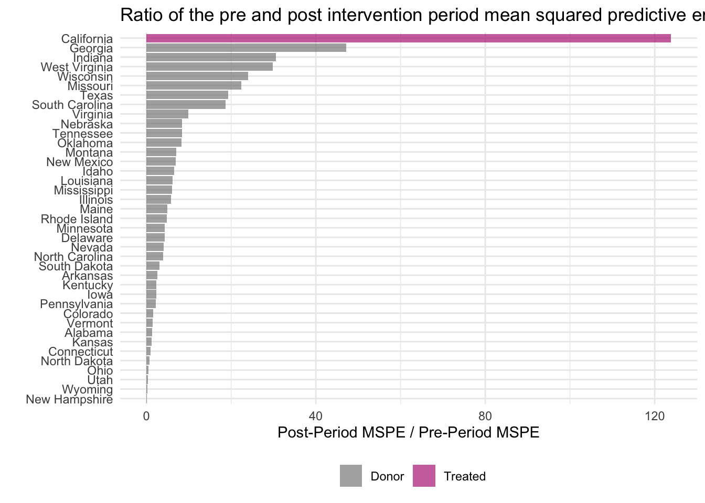

Chapter 16 合成コントロール法
16.1 合成コントロール法とは
16.1.1 差の差法で足りない場面
第15章の差の差法では、政策の影響を受けた処置群と、影響を受けなかった対照群を比べた。ニュージャージー州の最低賃金の例では、隣のペンシルベニア州を対照群とし、「政策がなければ2つの州は平行に推移したはずだ」という平行トレンドの仮定を置いた。
しかし、いつもちょうどよい対照群が見つかるとは限らない。特に次のような場合は難しい。
- 政策を実施したのが1つの地域だけである（1つの州、1つの県、1つの国）
- どの地域と比べても、政策前の推移が平行になっていない
例えば、1988年にアメリカのカリフォルニア州はProposition 99（Prop 99）という住民投票によって、たばこ1箱あたりの税金を25セント引き上げ、その税収を禁煙キャンペーンに使うことを決めた。この政策で、カリフォルニア州のたばこの消費量は減ったのだろうか。
政策を実施したのはカリフォルニア州だけなので、処置群は1つの州である。対照群として、ほかの州の平均を使えばよいだろうか。実は、カリフォルニア州のたばこ消費量は、政策の前からほかの州よりも速いペースで減っていた（演習で実際に図を描いて確認する）。この場合、平行トレンドの仮定は成り立たず、差の差法の推定値にはバイアスがかかってしまう。
16.1.2 合成コントロール法のアイデア
合成コントロール法（Synthetic Control Method, SCM）は、Abadie and Gardeazabal (2003) や Abadie, Diamond and Hainmueller (2010) によって開発された手法で、このような場面で使われる。
アイデアは次の通りである。カリフォルニア州とそっくりな州は1つも存在しないかもしれない。しかし、いくつかの州を適切な割合で混ぜ合わせれば、カリフォルニア州の政策前の動きをうまく再現できるかもしれない。例えば「ユタ州を34%、ネバダ州を24%、モンタナ州を21%、……」というように、ほかの州の加重平均で作った架空の州を考える。これを合成カリフォルニア（synthetic California）と呼ぶ。
合成カリフォルニアは政策前のカリフォルニア州とよく似た動きをするように作られている。そして、合成カリフォルニアを構成する州はどれもProp 99のような政策を実施していない。そこで、政策後の合成カリフォルニアの値を「もしカリフォルニア州が政策を実施していなかったら」という反実仮想とみなし、実際のカリフォルニア州との差を政策の効果として推定する。
差の差法が「平行に動く対照群を探す」方法だとすれば、合成コントロール法は「よく似た動きをする対照群を作る」方法だと言える。
16.1.3 合成コントロール法の式
処置を受けたユニット（ここではカリフォルニア州）を \(j=1\)、処置を受けていないユニット（ほかの州）を \(j = 2, \dots, J+1\) とする。処置を受けていないユニットの集まりをドナープール（donor pool）と呼ぶ。
合成コントロールは、ドナープールの各ユニットの目的変数 \(Y_{jt}\) を重み \(w_j\) で加重平均したものである。
\[ \hat{Y}^N_{1t} = \sum_{j=2}^{J+1} w_j Y_{jt} \]
ここで \(\hat{Y}^N_{1t}\) は「処置がなかった場合（\(N\) はno treatmentの意味）のユニット1の時点 \(t\) の値」の推定値である。重みには次の2つの制約を置く。
\[ w_j \ge 0, \quad \sum_{j=2}^{J+1} w_j = 1 \]
つまり、重みはマイナスにならず、合計すると1になる。こうすることで、合成コントロールは実在する州の「混ぜ合わせ」になり、どの州をどれだけ使ったのかを解釈しやすくなる。
処置後の各時点 \(t\) における処置効果は、実際の値と合成コントロールの値の差として推定する。
\[ \hat{\tau}_{t} = Y_{1t} - \hat{Y}^N_{1t} \]
16.1.4 重みの選び方
では、重み \(w_j\) はどうやって決めるのだろうか。
基本的な考え方は、処置前の期間に、合成コントロールが処置ユニットとできるだけ似るように重みを選ぶことである。「似ている」かどうかは、次のような変数（予測変数）で判断する。
- 処置前の目的変数の値（例：1975年、1980年、1988年のたばこ消費量）
- 目的変数に影響しそうな変数の処置前の平均（例：所得、たばこの価格、若者の人口比率）
これらの変数について、処置ユニットの値と合成コントロールの値の差が小さくなるように、コンピュータが重みを探す。どの予測変数をどれだけ重視するかも同時に決められるが、その詳細は本書の範囲を超えるので省略する。Rのパッケージがこの計算を自動で行ってくれる。
16.1.5 合成コントロール法の仮定
合成コントロール法による推定では、以下のような仮定を置いている。
- スピルオーバーがない：処置ユニットの政策が、ドナープールのユニットに影響しない。例えば、カリフォルニア州の人が隣のネバダ州でたばこを買うようになれば、ネバダ州の値も政策の影響を受けてしまう
- 事前の反応がない：政策の実施が決まる前に、人々がそれを見越して行動を変えていない
- 処置ユニットがドナープールの範囲内にある：重みは0以上で合計1なので、合成コントロールの値はドナープールの最小値と最大値の間にしかならない。処置ユニットがどの州よりも極端な値をとっていると、うまく再現できない
- 処置後にほかの大きなショックがない：処置ユニットだけに、政策以外の大きな出来事が同時に起きていない
16.2 Rでの演習
16.2.3 データの準備
tidysynth には、Abadie, Diamond and Hainmueller (2010) が用いたアメリカの州別のたばこ消費のデータが smoking として含まれている。
主な変数は以下の通りである。
| 変数 | 内容 |
|---|---|
state |
州の名前 |
year |
年（1970〜2000年） |
cigsale |
1人あたりのたばこ販売量（箱） |
lnincome |
1人あたり所得の対数 |
beer |
1人あたりのビール消費量 |
age15to24 |
15〜24歳の人口比率 |
retprice |
たばこの小売価格（セント） |
## # A tibble: 6 × 7
## state year cigsale lnincome beer age15to24 retprice
## <chr> <dbl> <dbl> <dbl> <dbl> <dbl> <dbl>
## 1 Rhode Island 1970 124. NA NA 0.183 39.3
## 2 Tennessee 1970 99.8 NA NA 0.178 39.9
## 3 Indiana 1970 135. NA NA 0.177 30.6
## 4 Nevada 1970 190. NA NA 0.162 38.9
## 5 Louisiana 1970 116. NA NA 0.185 34.3
## 6 Oklahoma 1970 108. NA NA 0.175 38.4このデータには、カリフォルニア州と、ドナープールとなる38州の、合わせて39州が含まれている。元の研究では、期間中にたばこ税を大きく引き上げたり、大規模な禁煙政策を実施したりした州は、あらかじめドナープールから除かれている。
## [1] 39lnincome と beer は1970年代の初めの値が欠損している（NA）ことに注意しよう。
## state year cigsale lnincome
## Length:1209 Min. :1970 Min. : 40.7 Min. : 9.397
## Class :character 1st Qu.:1977 1st Qu.:100.9 1st Qu.: 9.739
## Mode :character Median :1985 Median :116.3 Median : 9.861
## Mean :1985 Mean :118.9 Mean : 9.862
## 3rd Qu.:1993 3rd Qu.:130.5 3rd Qu.: 9.973
## Max. :2000 Max. :296.2 Max. :10.487
## NA's :195
## beer age15to24 retprice
## Min. : 2.50 Min. :0.1294 Min. : 27.3
## 1st Qu.:20.90 1st Qu.:0.1658 1st Qu.: 50.0
## Median :23.30 Median :0.1781 Median : 95.5
## Mean :23.43 Mean :0.1755 Mean :108.3
## 3rd Qu.:25.10 3rd Qu.:0.1867 3rd Qu.:158.4
## Max. :40.40 Max. :0.2037 Max. :351.2
## NA's :663 NA's :39016.2.4 カリフォルニア州とほかの州の比較
まず、差の差法の考え方で、カリフォルニア州とほかの38州の平均を比べてみよう。グループごとの平均を年ごとに計算して図にする。
smoking_avg <- smoking |>
mutate(group = if_else(state == "California", "カリフォルニア州", "その他38州の平均")) |>
group_by(group, year) |>
summarise(cigsale = mean(cigsale), .groups = "drop")
ggplot(smoking_avg, aes(x = year, y = cigsale, linetype = group)) +
geom_line() +
geom_vline(xintercept = 1988, linetype = "dotted", color = "red") +
labs(x = "年", y = "1人あたりのたばこ販売量（箱）", linetype = "") +
theme_minimal(base_family = "HiraKakuPro-W3")
赤い点線がProp 99の実施（1988年）である。1970年には2つのグループはほぼ同じ水準だったが、その後すぐに差が開き、1980年代にはカリフォルニア州の方が速いペースで減っている。政策の前から、2つのグループは平行に推移していないのである。
16.2.4.1 演習問題：差の差法による推定
第15章と同じ方法で、差の差法を推定してみよう。
smokingに、カリフォルニア州なら1をとるpolicyと、1989年以降なら1をとるtimeという2つのダミー変数を加え、smoking_didというオブジェクトに格納しなさいfeols()でcigsale ~ policy + time + policy:timeを推定し、reg_didというオブジェクトに格納して、etable()で表示しなさい
## reg_did
## Dependent Var.: cigsale
##
## Constant 130.6*** (1.087)
## policy -14.36* (6.789)
## time -28.51*** (1.747)
## policy x time -27.35* (10.91)
## _______________ _________________
## S.E. type IID
## Observations 1,209
## R2 0.20735
## Adj. R2 0.20538
## ---
## Signif. codes: 0 '***' 0.001 '**' 0.01 '*' 0.05 '.' 0.1 ' ' 1結果は上のようになる。policy x time の係数は約 \(-27.4\) であり、Prop 99によって1人あたりのたばこ販売量が年に約27箱減ったという推定になる。
しかし、上の図で見たように、カリフォルニア州は政策の前からほかの州より速く減っていた。差の差法は「政策がなければ、カリフォルニア州もほかの州と同じペースで減ったはずだ」と考えるので、もともとあった減少のペースの違いまで政策の効果に含めてしまっている可能性がある。つまり、この推定値は効果を過大に見積もっているかもしれない。
16.2.5 合成コントロールの作成
それでは、合成コントロール法で推定しよう。tidysynth では、次の4つのステップをパイプでつなげて書く。
synthetic_control()：データと、処置ユニット・処置時点を指定するgenerate_predictor()：重みを決めるときに使う予測変数を作るgenerate_weights()：重みを計算するgenerate_control()：合成コントロールを作る
smoking_out <- smoking |>
# 1. データの指定
synthetic_control(
outcome = cigsale, # 目的変数
unit = state, # ユニット（州）を表す変数
time = year, # 時点を表す変数
i_unit = "California", # 処置ユニット
i_time = 1988, # 処置が行われた時点
generate_placebos = TRUE # 後で使うプラセボ検定の準備
) |>
# 2. 予測変数の作成（1980〜88年の平均）
generate_predictor(
time_window = 1980:1988,
ln_income = mean(lnincome, na.rm = TRUE),
ret_price = mean(retprice, na.rm = TRUE),
youth = mean(age15to24, na.rm = TRUE)
) |>
# ビールはデータがある1984〜88年の平均
generate_predictor(
time_window = 1984:1988,
beer_sales = mean(beer, na.rm = TRUE)
) |>
# 処置前のたばこ販売量そのもの
generate_predictor(time_window = 1975, cigsale_1975 = cigsale) |>
generate_predictor(time_window = 1980, cigsale_1980 = cigsale) |>
generate_predictor(time_window = 1988, cigsale_1988 = cigsale) |>
# 3. 重みの計算（1970〜88年の当てはまりがよくなるように）
generate_weights(
optimization_window = 1970:1988,
margin_ipop = .02, sigf_ipop = 7, bound_ipop = 6 # 最適化の設定
) |>
# 4. 合成コントロールの作成
generate_control()generate_predictor() の中では、summarise() と同じように「新しい変数名 = 計算式」の形で予測変数を作っている。time_window で、どの期間のデータを使うかを指定する。generate_weights() の最後の行は最適化の計算を安定させるための設定なので、そのまま書き写せばよい。
16.2.6 結果の確認
16.2.6.1 実際の値と合成コントロールの比較
plot_trends() で、実際のカリフォルニア州と合成カリフォルニアの推移を比較できる。

灰色の実線（Observed）が実際のカリフォルニア州、赤紫の一点鎖線（Synthetic）が合成カリフォルニアである。先ほどの「その他38州の平均」と違い、合成カリフォルニアは1988年までのカリフォルニア州の動きをほぼ完全に再現している。そして1989年以降、実際のカリフォルニア州は合成カリフォルニアを大きく下回っている。
2つの差を直接図にするには plot_differences() を使う。

1988年まではほぼゼロの周りにあった差が、1989年以降はマイナス方向に広がっていく。政策の効果が年を追うごとに大きくなっていることがわかる。
16.2.6.2 重みの確認
合成カリフォルニアがどの州で作られているのかを確認しよう。grab_unit_weights() で各州の重みを取り出せる。
## # A tibble: 6 × 2
## unit weight
## <chr> <dbl>
## 1 Utah 0.342
## 2 Nevada 0.238
## 3 Montana 0.209
## 4 Colorado 0.149
## 5 Connecticut 0.0617
## 6 New Mexico 0.000434合成カリフォルニアは、ユタ州（約34%）、ネバダ州（約24%）、モンタナ州（約21%）、コロラド州（約15%）、コネチカット州（約6%）でほぼ構成されており、残りの州の重みはほとんどゼロである。38州すべてを平均するのではなく、カリフォルニア州に似た動きをする少数の州に重みを集中させていることがわかる。
plot_weights() を使うと、州の重み（Control Unit Weights）と予測変数の重み（Variable Weights）を図で確認できる。

16.2.6.3 予測変数のバランスの確認
合成カリフォルニアが、予測変数の面でも本当にカリフォルニア州に似ているかを確認しよう。
## # A tibble: 7 × 4
## variable California synthetic_California donor_sample
## <chr> <dbl> <dbl> <dbl>
## 1 ln_income 10.1 9.85 9.83
## 2 ret_price 89.4 89.4 87.3
## 3 youth 0.174 0.174 0.173
## 4 beer_sales 24.3 24.2 23.7
## 5 cigsale_1975 127. 127. 137.
## 6 cigsale_1980 120. 120. 138.
## 7 cigsale_1988 90.1 91.4 114.California が実際の値、synthetic_California が合成カリフォルニアの値、donor_sample がドナープール38州の単純平均である。たとえば1980年のたばこ販売量（cigsale_1980）は、38州の平均では約138箱とカリフォルニア州（約120箱）から大きく離れているが、合成カリフォルニアでは約120箱とほぼ一致している。単純な平均よりも、合成コントロールの方がずっとよい比較対象になっている。
16.2.6.4 演習問題：平均的な効果の計算
grab_synthetic_control() を使うと、年ごとの実際の値（real_y）と合成コントロールの値（synth_y）を取り出せる。
## # A tibble: 6 × 3
## time_unit real_y synth_y
## <dbl> <dbl> <dbl>
## 1 1970 123 117.
## 2 1971 121 119.
## 3 1972 124. 124.
## 4 1973 124. 125.
## 5 1974 127. 127.
## 6 1975 127. 127.これを使って、次の問いに答えなさい。
- 政策後の期間（1989〜2000年）について、実際の値と合成コントロールの値の差の平均を計算し、
effect_avgというオブジェクトに格納して表示しなさい - 2000年時点での差はいくらか
## # A tibble: 1 × 1
## effect
## <dbl>
## 1 -18.8## # A tibble: 1 × 4
## time_unit real_y synth_y effect
## <dbl> <dbl> <dbl> <dbl>
## 1 2000 41.6 67.2 -25.6結果は上のようになる。1989〜2000年の平均で、Prop 99は1人あたりのたばこ販売量を年に約19箱減らしたという推定になる。2000年時点では約26箱の減少である。
差の差法の推定値（約27箱）と比べると、効果は小さく推定されている。差の差法では、政策の前からあったカリフォルニア州の減少のペースの速さまで、政策の効果に含めてしまっていたのである。
16.2.7 プラセボ検定による統計的推測
合成コントロール法では、処置ユニットが1つしかないため、これまでの回帰分析のように標準誤差を計算して検定することが難しい。そこで、プラセボ検定という考え方を使う。
プラセボ検定の手順は次の通りである。
- ドナープールの州を1つ選び、「その州が1988年に政策を実施した」ことにする（実際には何もしていない）
- その州について、残りの州を使って合成コントロールを作り、差を計算する
- これをドナープールの38州すべてについて繰り返す
実際には何もしていない州で計算した差は、「偶然生じる差」の大きさを表している。カリフォルニア州の差が、ほかの州の「偶然の差」と比べて極端に大きければ、それは偶然ではなく政策の効果だと考えられる。
最初に generate_placebos = TRUE と指定していたので、この計算はすでに終わっている。plot_placebos() で結果を見てみよう。

赤紫の線がカリフォルニア州、灰色の線がプラセボの州である。1989年以降、カリフォルニア州の差はほとんどのプラセボの州よりも大きくマイナス方向に離れている。
なお、この図では、政策前の当てはまりが悪い州（政策前のずれの大きさがカリフォルニア州の2倍を超える州）は自動的に除かれている。政策前から合成コントロールとずれている州は、政策後の差が大きくても比較の意味がないからである。
16.2.7.1 MSPE比による順位
図だけでなく、数値でも比べてみよう。ここでは、政策前と政策後の当てはまりの悪さの比を使う。当てはまりの悪さは、差の2乗の平均（MSPE, mean squared prediction error）で測る。
\[ \text{MSPE比} = \frac{\text{政策後のMSPE}}{\text{政策前のMSPE}} \]
政策前はよく再現できていて（分母が小さい）、政策後に大きくずれる（分子が大きい）ほど、MSPE比は大きくなる。

smoking_out |>
grab_significance() |>
select(unit_name, type, pre_mspe, post_mspe, mspe_ratio, rank, fishers_exact_pvalue) |>
head()## # A tibble: 6 × 7
## unit_name type pre_mspe post_mspe mspe_ratio rank fishers_exact_pvalue
## <chr> <chr> <dbl> <dbl> <dbl> <int> <dbl>
## 1 California Treated 3.17 392. 124. 1 0.0256
## 2 Georgia Donor 3.79 179. 47.2 2 0.0513
## 3 Indiana Donor 25.2 770. 30.6 3 0.0769
## 4 West Virginia Donor 9.52 284. 29.8 4 0.103
## 5 Wisconsin Donor 11.1 268. 24.1 5 0.128
## 6 Missouri Donor 3.03 67.8 22.4 6 0.154カリフォルニア州のMSPE比は39州の中で1位である。もし政策に効果がなければ、カリフォルニア州が39州の中でたまたま1位になる確率は \(1/39 \approx 0.026\) である。これが fishers_exact_pvalue の値であり、通常のp値と同じように解釈できる。5%水準で「政策の効果はゼロ」という仮説を棄却できる。
16.3 合成コントロール法の注意点
合成コントロール法は、政策を実施したユニットが1つしかない場合でも使える便利な手法だが、いくつか注意すべき点がある。
政策前の当てはまりが悪い場合は使えない
合成コントロール法の説得力は、「政策前はよく再現できていた」ことに支えられている。政策前の推移を再現できていなければ、政策後の差も信用できない。まず plot_trends() で政策前の当てはまりを必ず確認しよう。
予測変数やドナープールの選び方で結果が変わる
どの変数を予測変数に使うか、どの州をドナープールに入れるかによって、重みも推定値も変わりうる。分析者に都合のよい結果を選べてしまわないように、選び方の理由を説明し、選び方を変えても結果が大きく変わらないことを確認するのが望ましい。
スピルオーバーのあるユニットは除く
処置ユニットの近くにあって政策の影響を受けそうなユニットや、同じ時期に似た政策を実施したユニットは、ドナープールから除いておく必要がある。Abadie, Diamond and Hainmueller (2010) でも、期間中にたばこ税を大きく引き上げた州などを除いている。
推測は標準誤差ではなくプラセボで行う
処置ユニットが1つしかないので、通常の標準誤差やt検定は使えない。プラセボ検定のp値は、ドナープールの数に依存する点にも注意しよう。例えばドナープールが9ユニットしかなければ、1位になってもp値は \(1/10 = 0.1\) より小さくならない。
16.4 まとめ
合成コントロール法は、ドナープールのユニットを重み付けして「処置ユニットによく似た架空のユニット」を作り、それを反実仮想として政策の効果を推定する手法である。差の差法が平行に動く対照群を探すのに対し、合成コントロール法はよく似た動きをする対照群を作る。そのため、処置ユニットが1つしかなく、平行トレンドを満たす対照群が見つからない場合にも使える。
Prop 99の例では、差の差法の推定値（約27箱の減少）に比べて、合成コントロール法の推定値（約19箱の減少）は小さかった。適切な対照群を作ることで、政策前からあった違いを効果と取り違えずに済んだのである。
次章では、疑似実験の別の手法として、ある基準（カットオフ）の前後を比較する回帰不連続デザイン（第17章）を学ぶ。